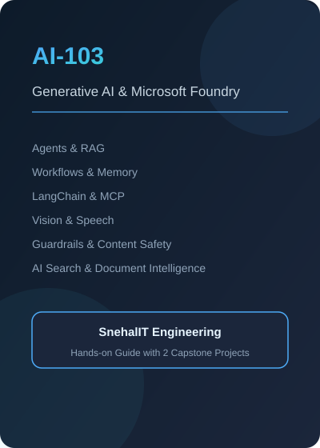

A complete hands-on guide to building generative AI applications on Microsoft Foundry and Azure AI Foundry. The course begins with the fundamentals of generative AI and large language models, then moves through model deployment, prompt engineering, agentic AI with the Foundry Agent Service, retrieval augmented generation, workflows, memory, monitoring and evaluations, guardrails, LangChain and LangGraph, the Model Context Protocol, vision and image generation, content safety, language and speech services, content understanding, Azure AI Search, and document intelligence. It finishes with two full capstone projects, a practice test, and a project building a chatbot with Azure Functions, React.js, Azure AI Search, and a containerized LLM backend.